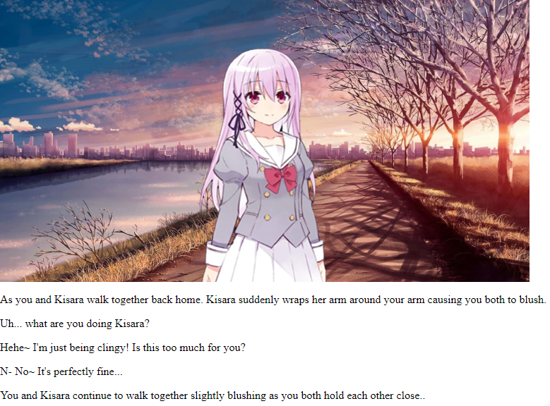
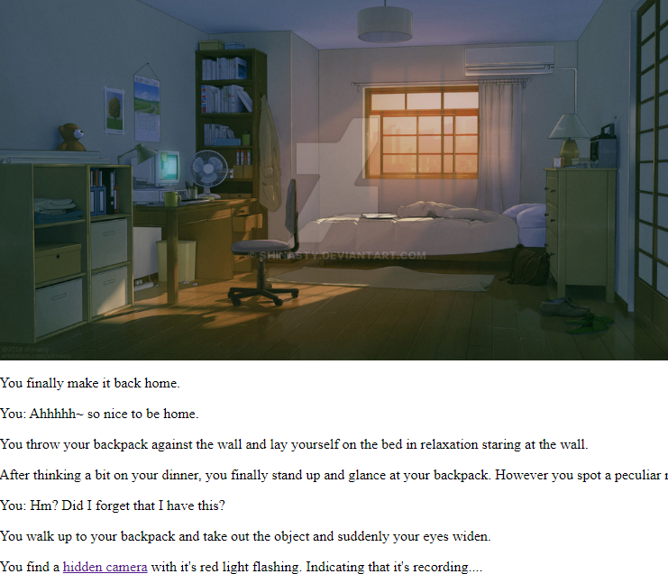

Jon-Jon Rodriguez's Portfolio
Net Art
Using the text software of Notepad++, html files were created to create Net Art which consists of
one click on the website leading to another scene. Each of the buttons lead to another scene which
then leads to another scene similar to a tree of paths.
Even this entire Portfolio is created from an html file!
For this project, I decided to create a Dating Simulator which demonstrates how choices will lead to
more choices and outcomes. The character used in the Net Art is from the anime series, "Engage Kiss."
The story that is represented in the story is completely made from my own ideas.
Link to Net Art can be found here:

